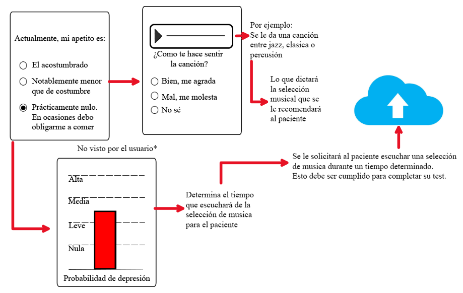

1.2. Objetivos
Objetivo general
Implementar un sistema de descarte del estado psicológico a distancia para pacientes post covid. Que cumpla las normas de seguridad y parámetros de privacidad.
Objetivos específicos:
-
Realizar un estudio del estado del arte sobre los sistemas de monitoreo psicológico. priorizando la efectividad y posible masificación de estos.
-
Definir las funciones que debe cumplir el sistema, así como hacer énfasis en cómo se podrá recolectar la información para que esté a disposición del médico encargado del monitoreo.
-
Realizar la selección de alternativas de solución para las funciones del sistema y proponer tres conceptos de solución a partir de la combinación de dichas alternativas.
-
Elegir un diseño conceptual de solución óptima a partir del análisis técnico-económico de los tres conceptos de solución anteriormente analizados.
1.3. Alcance
El presente trabajo de investigación se base en el estudio del estado del arte realizado en el “Hito 1” y con ayuda de una matriz morfológica se propondrá una solución óptima tomando en consideración un análisis técnico- económico de tres soluciones los cuales tendrán similitudes con sistemas investigados en el estado del arte. Solo abordaremos hasta tener un sistema de baja resolución.
1.4. Normativa relativa a Protección de Datos Personales
Los datos personales son toda aquella información sobre una persona natural que la identifica o la hace identificable a través de medios que puedan ser razonablemente utilizados, de estos, los datos sensibles son aquellos datos personales constituidos por los datos biométricos que por sí mismos pueden identificar al titular; datos referidos al origen racial y étnico; ingresos económicos, opiniones o convicciones políticas, religiosas, filosóficas o morales; afiliación sindical; e información relacionada a la salud o a la vida sexual.
La normativa nacional, con el objeto de garantizar el derecho fundamental a la protección de los datos personales, previsto en el artículo 2 numeral 6 de la Constitución Política del Perú, que establece que toda persona tiene derecho a que los servicios informáticos, computarizados o no, públicos o privados, no suministren informaciones que afecten la intimidad personal o familiar [8], instauró la Ley 29733, Ley de Protección de Datos Personales: desarrolla los derechos de los titulares de datos personales, los principios y las condiciones que se deben aplicar en su tratamiento. La presente Ley es de aplicación a aquellos datos personales destinados a ser contenidos en datos personales de administración pública o privada, cuyo tratamiento se realiza en territorio nacional.
Los datos personales sólo pueden ser objeto de tratamiento con consentimiento de su titular, salvo ley autoritativa al respecto. En el caso de datos sensibles, el consentimiento, además, debe efectuarse por escrito, no obstante, el tratamiento de datos personales y/o sensibles puede efectuarse cuando la ley lo autorice y siempre que ello atienda a motivos importantes de interés público [9].
El artículo 14.- Limitaciones al consentimiento para el tratamiento de datos personales establecer que “No se requiere el consentimiento del titular de datos personales, para los efectos de su tratamiento, [..] Cuando se trate de datos personales relativos a la salud y sea necesario, en circunstancia de riesgo, para la prevención, diagnóstico y tratamiento médico o quirúrgico del titular” [9].
La normativa internacional, mediante la Declaración Universal de Derechos Humanos y la Convención Americana de Derechos Humanos protegen los datos personales a través del derecho a la intimidad personal y familiar, y proscriben cualquier injerencia arbitraria en la vida privada. Asimismo, la Red Iberoamericana de Protección de Datos es un foro integrador de diversos actores públicos y privados, a los cuales se encuentra inscrito el Perú, que promueve una regulación avanzada del derecho a la protección de datos personales [10].
2. Diseño conceptual
Para conseguir el diseño del concepto final para el sistema, primero debemos tener en cuenta las funciones requiere el sistema, proponer estrategias de solución y con la estrategia ganadora realizar un diagrama de funciones para así determinar los componentes de este mismo. Finalizamos analizando los conceptos de solución generados por la matriz morfológica y tomaremos uno como nuestro concepto ganador mediante un análisis técnico-económico.
2.1. Requerimientos de diseño
Detallaremos los requerimientos funcionales y no funcionales sobre nuestro sistema para que se pueda entender la razón por la cual son tomados en cuenta.
1. Privacidad
Para que el usuario tenga la seguridad y comodidad de responder las preguntas.
2. Transportable
Se requiere que deba ser transportable para que el paciente pueda tener accesibilidad a este en todo momento y pueda realizar sus actividades diarias sin tomar en cuenta que está llevando el sistema en todo momento
3. Sencillo de usar
Ya que esto permitirá a que diversos grupos de edades puedan interactuar con el sistema de forma intuitiva y sin necesidad de un especialista.
4. Cómodo
Debido a que tendrá que ser usado a lo largo del día y todos los días hasta que el paciente cumpla su rehabilitación post-COVID con éxito. Y para poder evitar generar otros problemas psicológicos que se pueden generar por el estrés.
5. Didáctico
Por lo que su uso será continuo debemos evitar que el paciente se aburra a la hora de usar el sistema, por lo que debe ser didáctico para incentivar que haga uso de este.
6. Fácil mantenimiento
Tenemos que considerar esto para que sea sencillo de reparar el sistema y el paciente pase el menor tiempo posible sin este.
7. Recolecta información verídica
Uno de los requerimientos más importante para nuestro sistema ya que con esto podremos diagnosticar al paciente sin que un especialista realice este monitoreo diariamente. Lo que permitirá al personal médico enfocarse en otras actividades.
8. Seguimiento diario
Necesitamos esto ya que nos ayudará a tener una idea sobre la salud mental del paciente durante el tiempo que se requiera llevar una rehabilitación post-COVID.
9. Monitoreable a distancia
Nos permite tener la información en tiempo real del estado de ánimo del paciente. Y poder tomar cartas en el asunto si vemos que se están generando problemas y poder solucionarlo lo antes posible.
10. Costo accesible
Debido a la coyuntura a la fecha del 2020 esto es un requerimiento indispensable debido a que también nos ayudará a tener en cuenta el precio de fabricación del sistema. Debemos tenerlo en consideración para que los pacientes puedan dirigir sus recursos a otras necesidades.
2.2. Estrategia de solución
Una aplicación para celular con la cual podamos monitorear el estado psicológico del paciente a distancia y que nos permita obtener información psicológica sobre el paciente, que nos permitirá obtener un descarte psicológico del mismo. La información recolectada estará a disposición del paciente y también será enviada al médico encargado.
2.3. Estructuras de funciones
Figura N°1 : Esquema de funciones.
Con el objetivo de definir los elementos del software, se analizarán las funciones que se necesitarán para que el sistema opere de la manera adecuada y obtengamos los resultados buscados. Nuestro esquema de funciones es:
Ahora se presentan las funciones de la estructura del sistema dividas en dominios según la relación que guardan con el proceso:
A. Dominio de Interfaz

Figura N°2 : Dominio de Interfaz
-Configurar parámetros iniciales
El paciente introducirá sus datos personales lo que le permitirá acceder al software.
-Enviar información
La señal que servirá para que el software empiece a trabajar.
-Test a completar
El test será mostrado en pantalla para que el paciente pueda completarlo.
-Recibir información
El resultado que se mostrará al paciente
B. Dominio de Comunicación
Figura N°3 : Dominio de Comunicación
-Recibir información
La confirmación que recibirá el sistema para empezar a trabajar
-Enviar información
El módulo donde se reciben los resultados en general donde parte se mostrará al paciente y otra parte se dirigirá a la base de datos del centro médico.
C. Dominio de Procesamiento
Figura N°4 : Dominio de Procesamiento
-Preparar test
Se elegirá el test a trabajar, dependiendo del tipo de test puede que este módulo se extienda un poco más, será una de las variables más importantes a considerar. Con esto definiremos la efectividad de nuestro software.
-Confirmar identidad
La señal que permitirá al usuario realizar el test, luego de haber confirmado su identidad.
-Recolectar información del test
Se recolectarán los resultados del test para proceder a analizarlos.
-Analizar resultados de test
Con esto procederemos a descartar una posible patología psicológica.
-Generar descarte psicológico
Podremos descartar o no que el paciente tenga depresión o ansiedad.
D. Dominio de Validación
Figura N°5 : Dominio de Validación
-Solicitar validación de identidad
Se solicita al usuario que pueda darnos información la cual verifique su edad.
-Confirmar validación de identidad
Se comprueba la información brindada con las ya solicitadas anteriormente
2.4. Conceptos de solución
Figura N°6 : Conceptos de solución
Concepto de solución 1:

Figura N°7 : Concepto de solución 1
Una página web optimizada para smartphones y computadoras la cual cuenta con un test que consiste en dos partes: una de música y otra de opciones múltiples. La parte de música tiene canciones de jazz, percusión, meditación, etc. La parte de opciones múltiples es similar a un test convencional.
Para asegurarnos de la identidad del paciente la página solicitará acceso a la cámara y micrófono. Se le tomarán 3 fotos sin avisar y mantendrá el micrófono encendido mientras da el test. En el caso de que no se pueda tomar fotos claras del paciente se procederá analizar el audio generado para comprobar su identidad.Toda la información recolectada será recolectada con ayuda de mongoDB y serán almacenados en la nube para posteriormente ser comprobado por el médico a cargo.
Concepto de solución 2:
Figura N°8 : Concepto de solución 2
Una aplicación para smartphones la cual cuenta con un test que consiste en dos partes: una de video y otra de opciones múltiples. La parte de video es interactiva, se le propondrán situaciones al pacientes y basado en sus respuestas se acumularan puntos que determinaran el descarte. La parte de opciones múltiples tiene un mecanismo similar pero se centrará en confirmar el descarte.
Para asegurarnos de la identidad del paciente aprovecharemos las capacidades del smartphone y lo haremos con reconocimiento de huella digital. Esta huella será comparada con la que se encuentra en su DNI. Todos los resultados serán almacenados en la nube con ayuda de MySQL para posteriormente ser recolectados por el médico a cargo.
Concepto de solución 3:

Figura N°9 : Concepto de solución 3
Una página web optimizada para computadoras la cual cuenta con un test de opciones múltiples. Este test es similar al convencional pero se concentra en tomar las preguntas más relevantes que puedan brindarnos un descarte psicológico.
Para asegurarnos de la identidad del paciente la página solicitará acceso a la cámara web de la computadora. Durante la resolución del test se tomará 3 fotos del usuario en cualquier momento. La foto será comprobada con la información que está en su DNI. Todos los resultados serán enviados a la nube con ayuda de Firebase para posteriormente ser recolectados por el médico a cargo.
2.5. Análisis Técnico-Económico
Figura N°10 : Análisis Técnico
Figura N°11 : Análisis Económico
Figura N°12 : Concepto Ideal